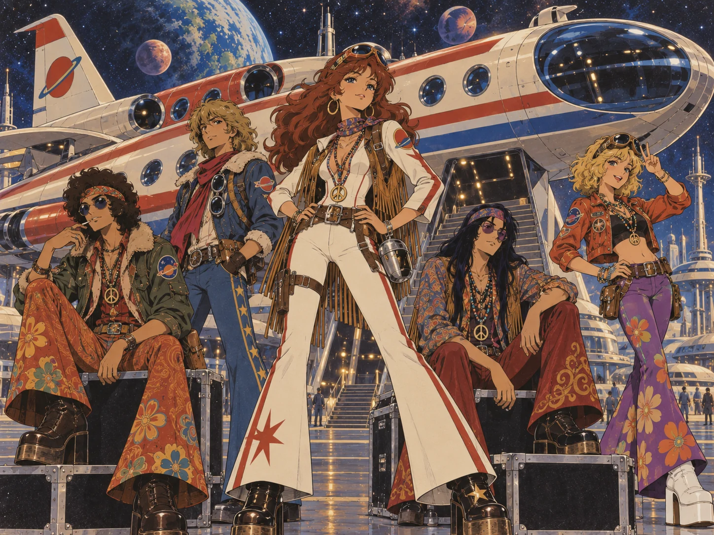
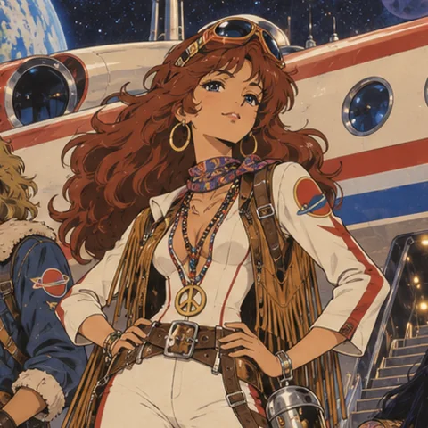
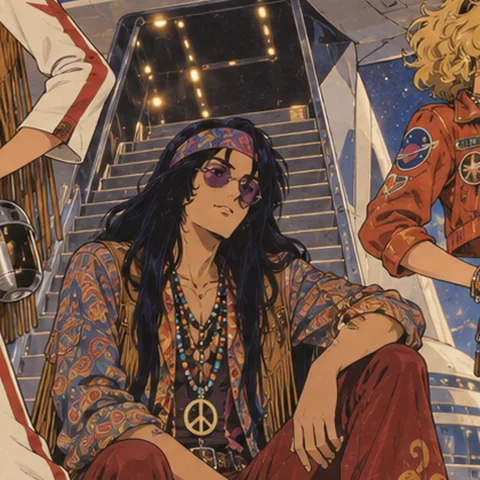
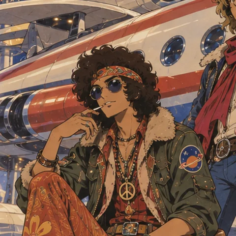
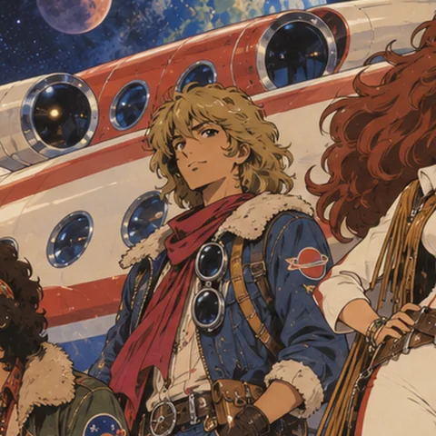
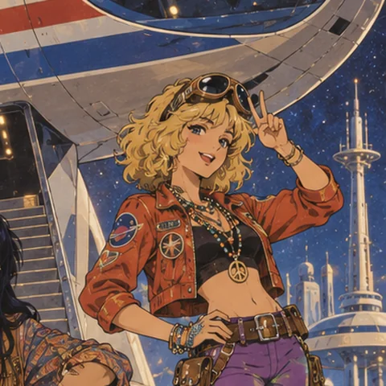
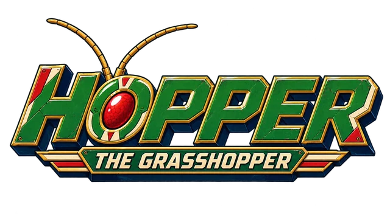

Est. 1971 · Tempest Docks Spaceport
Space Tiber
Five musicians, one converted orbital liner, and the three recordings that carry Hopper the Grasshopper from the title screen to the far side of the black sun.
The band
Space Tiber formed in the winter of 1971 in the crew lounge of a decommissioned passenger liner, the Tiber, parked on a forgotten pad at Tempest Docks. Sora Amane had bought the ship for scrap money and never got round to scrapping it. The others turned up to play a single farewell set on its observation deck, and the set never ended.
They play the music of a future imagined from a long way back: twelve-string guitars through spring reverb, an electric organ bolted to the flight deck, a rhythm section that swings like a landing burn. Everything is recorded on the ship, usually while it is moving.
When the studio behind Hopper the Grasshopper asked for a theme that could sit under a title screen for a very long time without wearing thin, the band answered with the whole score.
- Home portTempest Docks, Episode Two
- VesselThe Tiber, orbital liner (converted)
- RecordingsThree, all for Hopper
- Running time10 min 49 s, looped for hours
Line-up
-

Sora Amane
Voice · twelve-string · captain of the Tiber
Writes the words on the flight deck and sings them like they were orders. Bought the ship; refuses to sell it.
-

Jun Kaede
Lead guitar
The slow, wide solos on Dark Moon are Jun, sat exactly like this, with the amp in the cargo hold for the echo.
-

Rui Nakagawa
Bass · low end
Plays under everything. Grass March was built up from Rui's walking line before it had a melody.
-

Teo Marlowe
Drums · percussion
Counts every song in with a flight-deck countdown. Keeps time in the same way the ship keeps orbit.
-

Lulu Vance
Organ · synthesiser · harmonies
Owns the organ that is bolted to the deck and the small synth that is not. Responsible for every sound that sounds like a star.
Music
The complete Space Tiber catalogue is the Hopper the Grasshopper score. All three recordings play from the game itself.

Original game soundtrack · 1972
Now playing —
The recordings live with the game. Open this page from the published site, or run the game locally, to hear them.
The title theme carries straight on into the first episode without restarting. Grass March takes over at the foundries; Dark Moon plays for the whole of the red, blue and violet worlds. Recorded aboard the Tiber. Mastered for looping.
The game
Hopper the Grasshopper
A three-episode, controller-first anime adventure. Pilot a giant mecha grasshopper from the Sunseed Fields, over Crownline City and the Thunderhead Range, through the Cinder Foundries and Tempest Docks, up the Skyhook Works and out to a world where the gravity is wrong. Space Tiber wrote every note you hear on the way.
- 01 Earthbound Thunder Fields · metropolis · mountains Hopper the Grasshopper
- 02 The Iron Migration Foundries · storm docks · launchworks Grass March
- 03 Beyond the Black Sun Red basin · blue drift · violet cathedral Dark Moon
The Tiber flies again
1972 spring tour. The ship is the venue; the venue lands.
| Date | Pad | Region | Notes |
|---|---|---|---|
| 04 Mar | Sunseed Fields | Earthbound | Open-air, on the flat below the silos |
| 11 Mar | Crownline City | Earthbound | Roof deck, weather permitting |
| 18 Mar | Thunderhead Range | Earthbound | Gorge floor. Bring a coat. |
| 01 Apr | Cinder Foundries | Iron Migration | Casting line, between pours |
| 08 Apr | Tempest Docks | Iron Migration | Homecoming. Two nights. |
| 15 Apr | Skyhook Works | Iron Migration | Launch apron; last show before the crossing |
| 06 May | Vermilion Basin | Black Sun | Heavy gravity. Short set. |
| 13 May | Cobalt Drift | Black Sun | Low gravity. Long set. |
| 20 May | Violet Inversion | Black Sun | Played upside down, apparently |